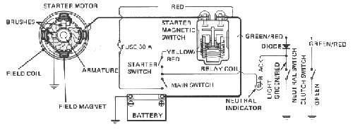

You press start and hear a click or a fast clatter from under the seat, but the engine does not turn. The relay coil works, so the control side of the circuit is fine. The heavy current is not reaching the starter motor, or the motor cannot turn the engine. A fast chattering usually means a weak battery; one clean click usually means a poor connection, burnt relay contacts or a faulty starter.
Is it safe to ride?
If it starts with the kickstarter or a jump start, you can ride, but the battery or wiring may leave you stranded. Do not keep pressing the button: the relay contacts and the battery suffer.
Quick checks first
- Is it a fast clatter (weak battery) or a single click?
- Do the lights dim heavily when you press start?
- Are both battery terminals tight? Try to twist them by hand.
- Does the engine turn with the kickstarter?
Diagnose it step by step
1Is the battery charged (horn loud, lights bright, voltage at or above the charged value)?
- No: charge it with Test and charge a 12 V battery, or Jump start a motorcycle safely to get going.
- Yes: go to step 2.
2Are the battery terminals and the main earth cable clean and tight?
- No: Clean and tighten battery terminals.
- Yes: go to step 3.
3Does the engine turn over freely with the kickstarter, or by rocking the bike in top gear?
- No: the engine may be locked. Do not keep trying the starter. Check the oil level and see Engine has seized or locked up.
- Yes: go to step 4.
4With a helper pressing start, do you measure close to battery voltage at the starter motor terminal (black probe on engine metal)?
- No: the relay contacts or the cable from relay to starter is bad. Go to step 5.
- Yes: the motor is getting power but not turning. Go to step 6.
5Does the relay pass the bench test (clicks and reads near zero ohms across its heavy terminals)?
- No: replace it. Test the starter relay.
- Yes: look for a loose or corroded cable between battery, relay and starter. Test the starter circuit.
6Is the earth path from the starter body to the engine and battery good (voltage drop test while cranking)?
- No: clean the starter mounting face and the earth cable. Clean and tighten earth connections.
- Yes: the starter motor is faulty (worn brushes or burnt commutator). Remove and inspect the starter motor.
Causes, most likely first
| Cause | How to confirm | Fix |
|---|---|---|
| Weak or flat battery | Fast chattering; lights dim; low voltage | Test and charge a 12 V battery |
| Loose or corroded terminal or earth | Terminal turns by hand; powder on terminal | Clean and tighten battery terminals |
| Burnt relay contacts | Relay clicks but no voltage at its output | Test the starter relay |
| Loose cable at relay or starter | Large voltage drop across one joint | Test the starter circuit |
| Worn starter brushes or commutator | Full voltage at starter, motor does not turn | Remove and inspect the starter motor |
| Engine locked | Kickstarter will not move | Assess bottom end and internal engine damage |